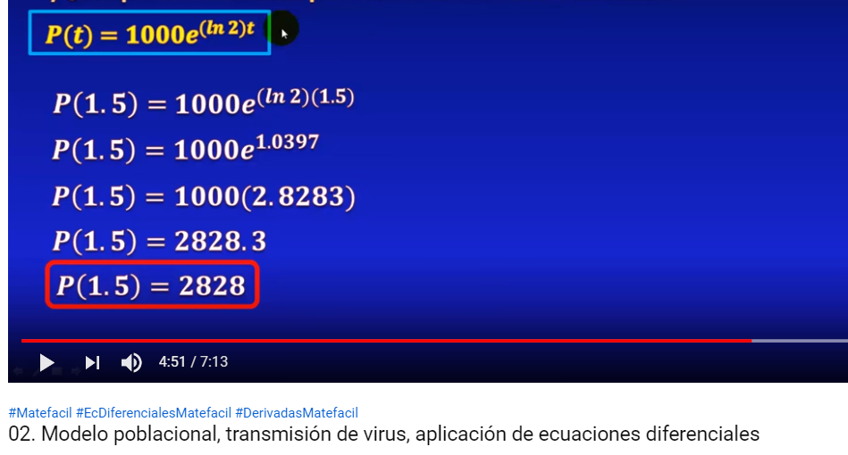

Calculadora Formula
Numero de computadores
inicialmente infectados (Q0):
Numero de horas inicial (t1):
Numero de computadores
infectados en (t1) (i):
Numero de horas de infección: (n)
CALCULAR
RESULTADO
El resultado es: {{ Q2 }}
DATOS
Los datos del ejercicio son:
Cantidad de computadores inicialmente infectados (Q0): {{ Q0 }}
Cantidad de horas transcurridas inicialmente (t1): {{ t1 }}
Cantidad de computadores infectados en t1 (i): {{ i }}
Cantidad de horas de transmision de virus (n): {{ n }}
PROCESO
Los resultados de cada operación son:
Aplicamos leyes de los exponentes: a^(bc) = (a^b)^c
El resultado quedaria: e^(ln({{ i }})^{{ n }})
Aplicamos propiedades de los logaritmos: e^(ln(b)) = b
El resultado quedaria: {{ i }}^{{ n }}
Resultado de {{ i }} ^ {{ n }}: {{ resultadoE }}
Resultado de la multiplicacion de {{ Q0 }} por el resultado por
{{ resultadoE }}: {{ Q0E }}
Ejercicio
Ejercicio propuesto por internet:
"En un principio existen 1000 computadores infectados con cierto virus altamente transferible por cualquier medio.
si el numero de computadores infectados se duplica después de una hora y media, indique cual es el numero total de
equipos infectados"

Tomado del link: https://www.youtube.com/watch?v=sKOHbx4UPTI